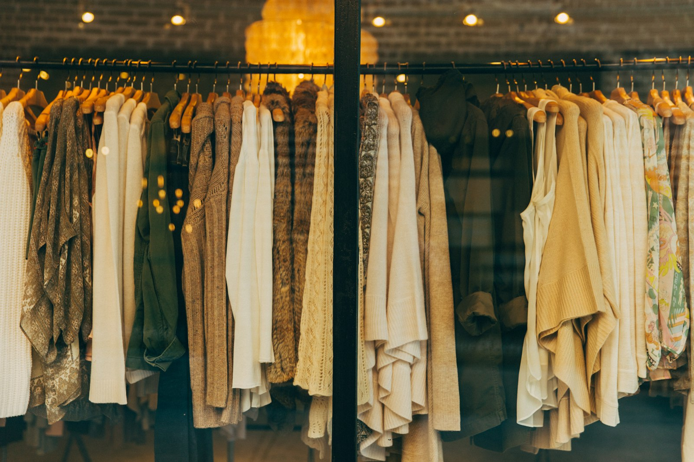
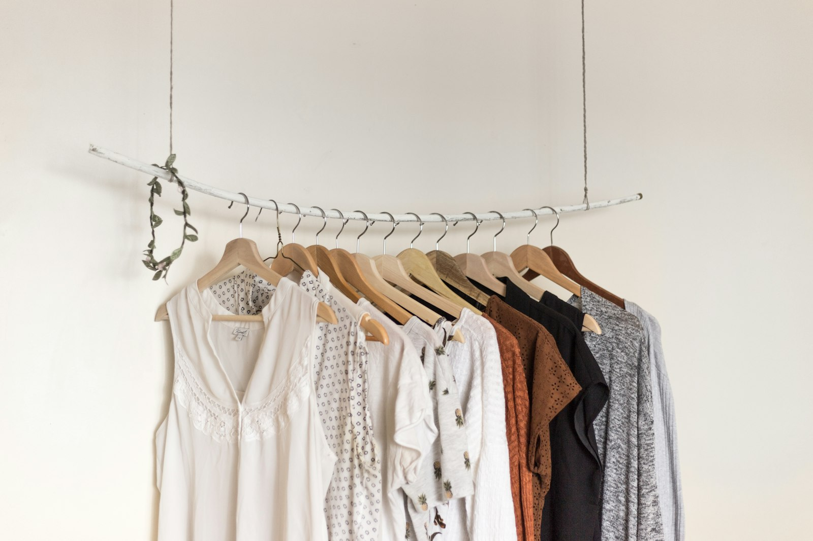
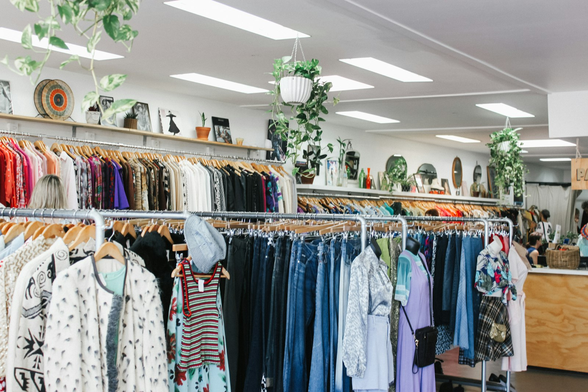

SERVICE 01
副業支援・古着卸売 Apparel B2B
古着・アパレルを小ロット（10点）から卸売。個品（デタウリ）は採寸データと撮影画像を付けてお渡しするので、検品や採寸・撮影の手間なく、すぐに出品できます。「副業で物販を始めたい」を、仕入れの面から支えます。
詳しく見る →
古着・アパレルのB2B卸売で副業の一歩目を支え、生成AIで毎日の業務を自動化する。
小さなチーム、NKonline です。
✓卸売サイトの会員登録・年会費は無料✓AI開発のご相談・お見積もり無料

NKonline は、古着・アパレルの卸売を通じて副業をはじめる方の最初の仕入れを支え、生成AIを活用したシステム開発で事業者の業務を自動化しています。
「これから物販を始めたい」「人手のかかる作業を仕組みで減らしたい」——その両方に、現場目線で寄り添います。
「物販でのはじめの一歩」と「AIによる業務の効率化」。
得意分野の異なる2つの事業で、お客様の挑戦を後押しします。

古着・アパレルを小ロット（10点）から卸売。個品（デタウリ）は採寸データと撮影画像を付けてお渡しするので、検品や採寸・撮影の手間なく、すぐに出品できます。「副業で物販を始めたい」を、仕入れの面から支えます。
詳しく見る →ChatGPT・Claude などの生成AIを活用し、在庫管理・受注処理・顧客対応といった反復業務を低コストで自動化。かんたんな自動化からWebアプリ・業務ツール・システム連携まで、既存の仕組みへの組み込みから運用サポートまで幅広く対応します。
詳しく見る →副業支援の中核となる、自社運営のB2B卸売プラットフォームです。
会員登録で、いつでもオンラインで仕入れができます。
10点から仕入れOK。最初の在庫リスクを抑えて、無理なく物販をスタートできます。
個品（デタウリ）は採寸データと撮影画像を付帯。検品・採寸・撮影の手間を省き、届いたその日から販売に集中できます。
生成AIを使った仕組みづくりが本業。物販で得た現場の知見を、そのまま自動化の設計に活かします。
